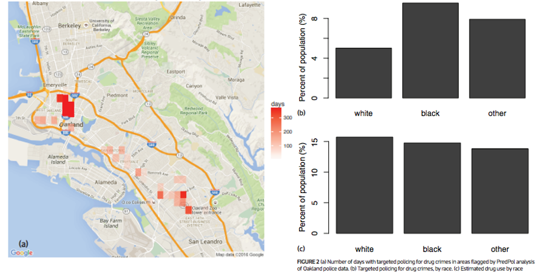

DATA SCIENCE, HUMANELY


Things that keep me up at night
Reinhart-Rogoff
This work was widely cited as a justification for the austerity measures in the EU

Herndon-Ash-Pollin
This is the world we created!

Our data science infrastructure is not humane
Predictive Policing

Deployed in major cities: Santa Cruz, Los Angeles, etc.
Lum and Isaac, Significance, 2016

Lum and Isaac, Significance, 2016
This is the world we created!

Our data science infrastructure is inhumane
Our ability to automate has far outpaced our ability to validate
Automation is not going away: we ought to empower people in this new context
I build data vis tools to help people


InfoVis 2018
Rebecca Faust, David Glickenstein, Carlos Scheidegger
InfoVis 2016
Zhe Wang, Nivan Ferreira, Youhao Wei, Aarthy Bhaskar, Carlos Scheidegger
Zhe Wang, Dylan Cashman, Mingwei Li, Jixian Li, Matthew Berger, Joshua A. Levine, Remco Chang, and Carlos Scheidegger.
Come work with us!